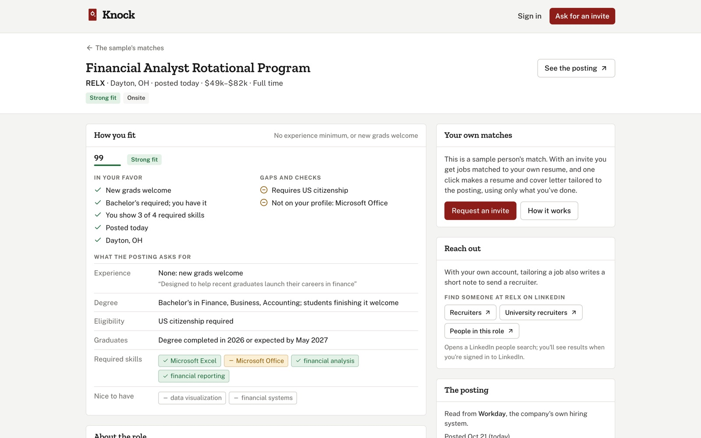

- Context
- Personal, solo
- Role
- Everything
- Status
- Live
- 773
- company job boards
- 190,000+
- open postings it tracks
- 4
- hiring systems it reads directly
Knock
New jobs you qualify for, every morning
Knock reads your resume, checks companies' own career sites every morning for new jobs you actually qualify for, and tailors your resume and cover letter for the ones you pick. It's live at knockapply.com, with a public sample anyone can look at.

Where it came from
Knock grew out of my Job Search Agent, a local pipeline I ran for my own search. The rules that made that useful are code here: read the stated minimum, not the title; don't trust an aggregator's dates; never apply for anyone; never make anything up.
Where the jobs come from
Knock polls the public job boards companies run on Workday, Greenhouse, Ashby and Lever, 773 of them as of October 2026, every six hours. That's where a posting actually lives, so a job that closes drops off the list.
Workday needed its own approach. A Workday posting's public page keeps answering 200 with the old details after a job closes, so Knock reads the JSON the site's own pages load, which answers 403 or 404 once a job is gone. The posted date comes from the company's system, and Knock records when it first saw each posting, so a repost doesn't pass for new.
Reading what a posting requires
Each relevant posting is read once by Claude Haiku, and the result is shared by everyone it might fit. A big backlog goes through the Message Batches API at half price. It pulls out the minimum years, the minimum degree, licenses you'd need to already hold, clearance, citizenship, sponsorship, pay, workplace, and the required and preferred skills.
Only what's required counts against you, so "Master's preferred" on a Bachelor's minimum is just a note. And it goes by the body text: a "New Grad" title can still require a Master's. Until Claude has read a posting, regular-expression rules stand in, and the page says so.
Before switching models, an eval reads the same real postings with two of them and compares the fields matching depends on, with the stronger model as the answer key.

Matching
Matching uses no AI, so a run over the whole index takes seconds and costs nothing. Titles come first: exact matches, then related titles in the same family, ranked a little lower. Then level, place and how recent the posting is, filtered by each person's settings. Then the gap between what a posting requires and what the person has, which sets the tier.
There are four tiers. Strong fit means no experience minimum, or new grads welcome. Fits means they meet the stated minimum. Stretch is up to a year short, or a degree that equivalent experience can replace. Reach is more than a year short, or a required degree or license they don't hold. Experience is worked out from the dates on the resume, and internships and research count fully toward a 0 to 1 year minimum and a quarter as much toward longer ones. A clearance they don't hold, citizenship they don't have, or no sponsorship when they need it leaves the posting out entirely.
Tailored materials that stay true
When someone picks a job, Claude Sonnet tailors their resume, a cover letter and a short recruiter note to it. It only rewords and reorders what's already in their profile, and every resume bullet cites the line it came from.
Then a check runs before anything is shown. A bullet with a number that isn't in its source line goes back to the person's original. Skills they never listed are dropped. Numbers in the letter that appear nowhere in the profile or the posting are flagged. Skills a posting asks for that the profile doesn't show come back as questions, and answering one adds it to the profile for next time. The resume and letter come out as .docx files in the classic layout the Job Search Agent used, and Knock never applies to a job or contacts anyone on someone's behalf.
Running it
Every six hours a full cycle polls every board, reads new postings and rematches everyone, and across all 773 boards it takes about five minutes. At 7am Eastern each person gets an email with only the jobs that matched since their last one, and nothing at all when there aren't any. Sign-in goes through Clerk, and Claude spend runs on daily budgets an admin can change, or switch off, from the admin page while it runs. The site is on Vercel and the engine on Fly.io, with Postgres behind it.
Limits
LinkedIn and Indeed don't let other sites read their postings, so Knock only sees jobs on companies' own boards, and a posting from anywhere else has to be pasted by its company link or its text. Workday is read through endpoints that aren't official, so a change on their side would need a fix on mine. And it covers tech, business and finance roles for now.
Stack Python and FastAPI · PostgreSQL and SQLAlchemy · Claude Haiku and Sonnet through the Anthropic API, with Message Batches · RapidFuzz · python-docx · APScheduler · Next.js 16, React 19 and Tailwind 4 · Clerk sign-in · Resend · Fly.io and Vercel
Live demo knockapply.com The sample is open to anyone and runs on postings open today. The source is private; email me to see it.